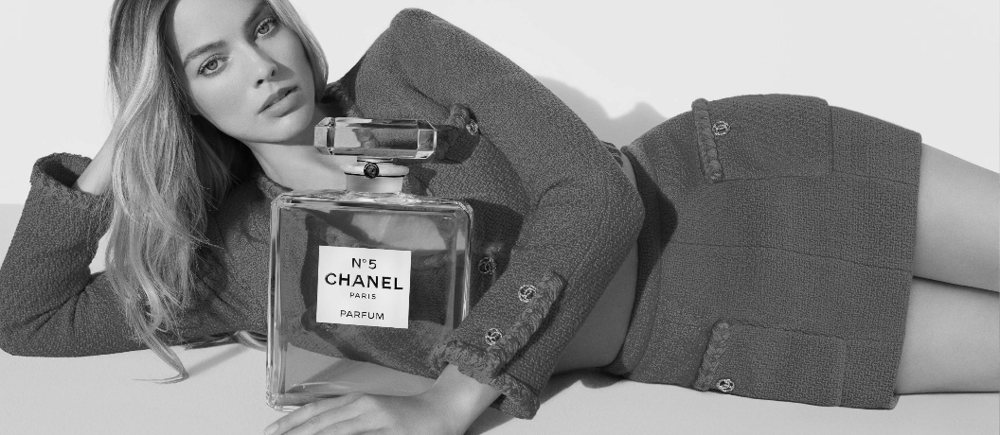

A História da Chanel: Como Tudo Começou!
A Chanel foi fundada por Gabrielle Bonheur Chanel, mais conhecida como Coco Chanel, em 1910, na França. Tudo começou com uma pequena loja de chapéus chamada Chanel Modes, em Paris. Com seu olhar inovador, ela logo começou a criar roupas que quebravam padrões da época, priorizando conforto, elegância e simplicidade.
Coco revolucionou a moda feminina, deixando de lado os espartilhos apertados e trazendo peças mais práticas, leves e sofisticadas. Assim nasceu a essência da Chanel: liberdade, sofisticação e autenticidade.
As Primeiras Peças Icônicas
Logo após os chapéus, Coco começou a criar roupas que mudaram o mundo da moda. As primeiras peças ficaram famosas pela simplicidade e elegância.
- Vestido Preto Básico (Little Black Dress) - Lançado nos anos 1920, se tornou símbolo de elegância e praticidade.
- Tailleur Chanel – O famoso conjunto de saia e blazer de tweed, confortável e extremamente sofisticado, lançado nos anos 1950.
- Suéteres de Jersey – Coco usou tecidos antes considerados masculinos para criar roupas femininas, confortáveis e elegantes.

Bolsas Icônicas da Chanel
- Chanel 2.55 – Lançada em fevereiro de 1955 (daí o nome), foi a primeira bolsa feminina com alça de corrente, para que as mulheres pudessem ficar com as mãos livres.
- Classic Flap Bag – Uma versão repaginada da 2.55, criada por Karl Lagerfeld, com o fecho duplo com o logo da Chanel (os dois C’s entrelaçados).
- Boy Bag – Lançada em 2011, mais moderna e estruturada, feita em homenagem a Boy Capel, grande amor de Coco.


Perfumes Mais Famosos da Chanel
- Chanel Nº 5 – Lançado em 1921, é até hoje o perfume mais famoso do mundo. Foi o primeiro perfume a ser feito com uma mistura de notas sintéticas e naturais. 
- Coco Mademoiselle – Perfume moderno, sofisticado e super popular, lançado em 2001.
- Gabrielle Chanel – Perfume em homenagem à própria fundadora, lançado em 2017, representando liberdade e autenticidade.

Sobre a Criadora — Coco Chanel

Gabrielle Chanel nasceu em 19 de agosto de 1883, na França. Teve uma infância difícil, foi criada em orfanato, onde aprendeu a costurar. Com espírito livre e visão à frente do seu tempo, ela quebrou padrões, empoderou mulheres e revolucionou o jeito de vestir.
Coco sempre buscou unir conforto, beleza e liberdade nas suas criações. Faleceu em 10 de janeiro de 1971, mas seu legado continua vivo, forte e muito influente na moda até hoje.